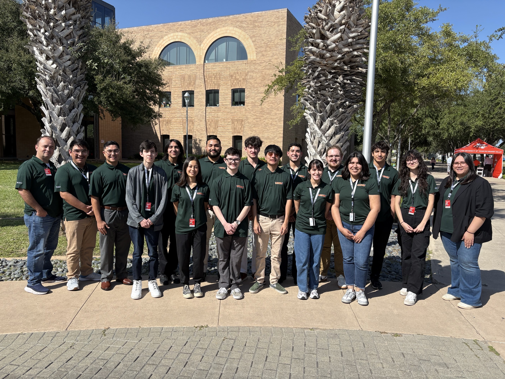

SOC Analyst
Becoming a full-time SOC Analyst is my primary goal after graduating. In this role, you will respond to and investigate security incidents using tools such as SIEMs, EDRs, and OSINT, taking appropriate action based on findings. You would also use ticketing systems to track incidents and communicate with clients and partners. Working in a SOC environment requires strong communication skills, as it involves frequent collaboration and discussion of incidents with both coworkers and clients. This is the area where I have the most experience, and I’m excited to see what it’s like to work as a full-time analyst!

Network Engineer
Although most cybersecurity positions only require a basic understanding of networking, I would like to work as a network engineer at some point in my career. A network engineer designs, implements, and maintains computer networks that support an organization’s systems and communications. They configure routers, switches, firewalls, and other infrastructure to ensure reliable and secure data flow, while also monitoring network performance, troubleshooting issues, and optimizing systems to prevent downtime and improve efficiency. Networking is at the heart of modern life because if networks go down, everything else is impacted.
Computer Forensic Analyst
To me, digital forensics is one of the most challenging fields to master as it is highly complex yet extremely interesting. A computer forensic analyst investigates digital devices and systems to uncover evidence of cybercrimes, security breaches, or policy violations. They collect, preserve, and analyze data from computers, mobile devices, and networks in a way that maintains its integrity for legal or investigative purposes. Their work often involves recovering deleted files, tracing unauthorized activity, and documenting findings in detailed reports. They may also support law enforcement or internal investigations by providing expert testimony or technical insight.